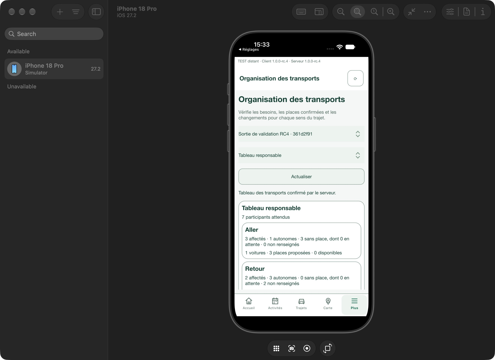
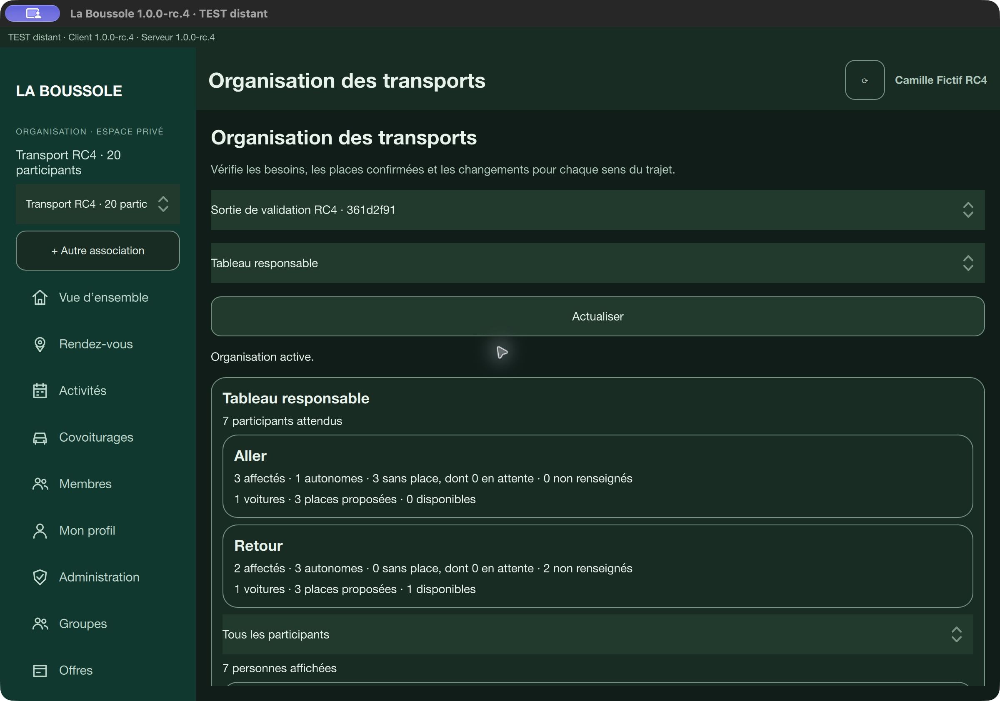
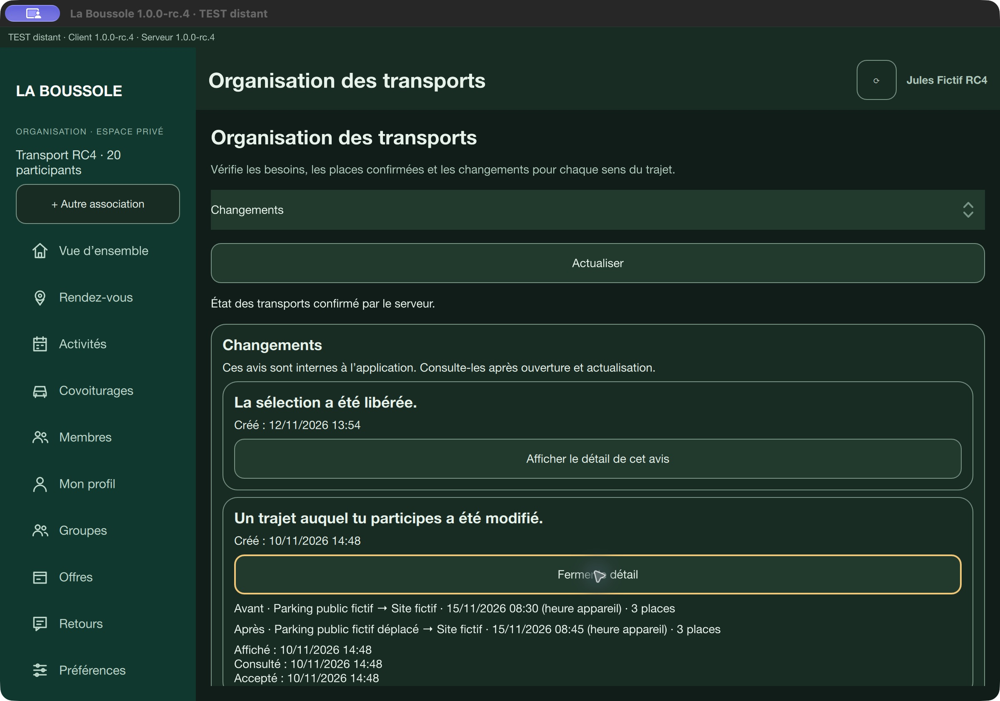
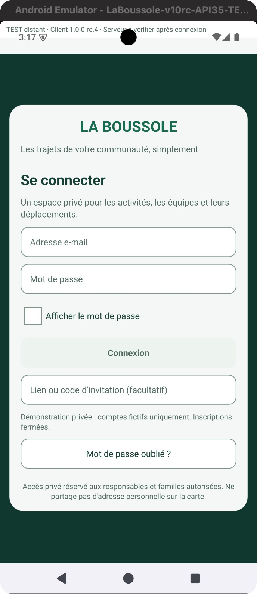

Le même départ.
Des besoins différents.
La démonstration privée RC4 relie les besoins du foyer, les places confirmées et le tableau du responsable. Voici les observations réellement obtenues, avec leurs limites.
Du besoin à la confirmation
Déclarer chaque sens
Le foyer choisit séparément un besoin de place, un déplacement autonome ou un besoin non renseigné pour l’aller et le retour. Une place réservée doit d’abord être libérée avant de modifier ce besoin.
Choisir les passagers
Une demande peut porter sur plusieurs personnes du foyer. La capacité compte les places passagers offertes, conducteur exclu. Pendant l’envoi, l’application attend la confirmation du serveur.
Attendre ensemble si nécessaire
Si les places manquent, aucune place n’est prise. Le foyer choisit explicitement de réduire sa sélection ou de mettre le groupe entier en attente. La file respecte l’ordre d’arrivée ; une seule place libre ne suffit pas à promouvoir un groupe de deux.
Libérer une seule place
L’annulation précise la personne et le sens concernés. Les autres places sont conservées. La place libérée peut permettre une promotion depuis l’attente.
Relire l’état partagé
Le responsable actualise son tableau : affectés, autonomes, sans place et besoins non renseignés, séparément pour chaque sens. Les personnes en attente sont incluses dans « sans place ».
Les règles de réservation groupée, concurrence et annulation sont couvertes par les tests du serveur et du client. Le parcours visuel complet de bout en bout reste limité par les environnements et les commandes d’accessibilité disponibles. La portée exacte accompagne chaque paquet privé.
Un retour autonome, lu sur un second client
Dans la sortie de validation à sept participants, le retour personnel de Jules a été enregistré comme autonome sur Mac. Le responsable connecté sur le simulateur iOS a retrouvé ce changement après actualisation.
| Sens | Affectés | Autonomes | Sans place | Non renseignés |
|---|---|---|---|---|
| Aller | 3 | 1 | 3 | 0 |
| Retour | 2 | 3 | 0 | 2 |


Après une annulation partielle
Le Passager 2 de Jules a été mis explicitement en attente à l’aller. Lorsque Jules a libéré son seul aller personnel, le serveur a confirmé la promotion de ce passager, en conservant le retour autonome de Jules. La lecture de l’API vérifie ces états ; le responsable retrouve les mêmes compteurs dans le paquet Mac final.

Comprendre ce qui change
Un avis interne donne les valeurs avant et après une modification du trajet. Consulter l’avis et en accuser lecture sont des états distincts. Aucun envoi automatique de SMS ou d’e-mail n’est annoncé.

Chaque plateforme a sa portée
Mac permet les essais interactifs du foyer. Windows et Android disposent aussi de contrôles métier automatisés dans des bancs distincts. Sur Android, l’installation, l’écran et la liaison HTTPS du produit sont vérifiés ; le parcours tactile complet reste à réaliser. iOS est vérifié sur simulateur pour la connexion et la lecture présentées ci-dessus.


Les offres à 19 € et 49 € par mois et par association restent des hypothèses. Aucun paiement ni inscription publique n’est activé.